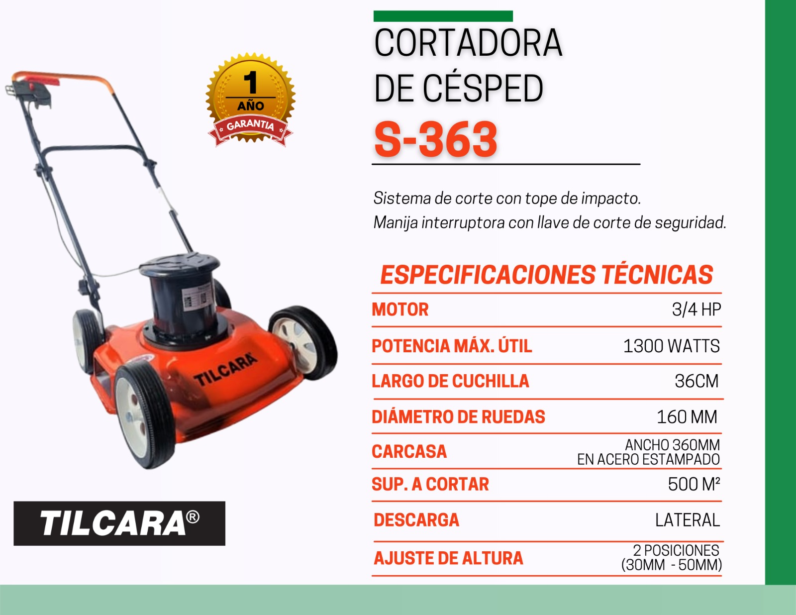

Inicio
Catálogo
Distribuidores
Contacto
Solicitar información
Ver catálogo
Catálogo
/
Cortadora de césped eléctrica
/
1.0 Tradicional
/ 1.1
1.1 — Cortadora Tradicional Motor Acero, Salida Lateral

¿Querés más información sobre este modelo?
Consultá con un distribuidor JHB para conocer stock y precios.
Consultar a un distribuidor